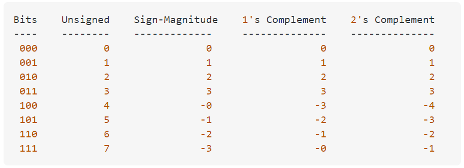

Most systems use 2's Complement for signed integer values
unsigned int cannot overflow, it wraps around itself
UINT_MAX + 1 == 0
UINT_MAX + 2 == 1
UINT_MAX + 3 == 2
Why is unsigned integer overflow defined behavior but signed integer overflow isn't?